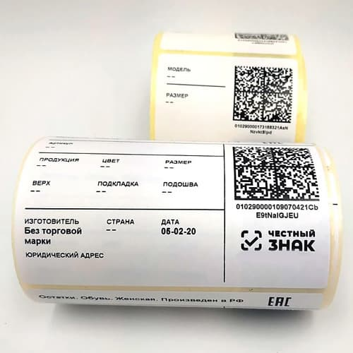

Маркировка «Честный ЗНАК» представляет собой важный инструмент для отслеживания товаров от момента их производства до реализации конечному потребителю. Эта система обеспечивает прозрачность на рынке и помогает потребителям делать осознанный выбор, зная, что товары прошли все необходимые проверки.
Согласно последним изменениям, утвержденным постановлением №2402-р, товары легкой промышленности, изготовленные ремесленниками, исключены из перечня, подлежащего обязательной маркировке. В этот список вошли трикотажные блузки машинной и ручной вязки, пальто, накидки, плащи, куртки, ветровки, а также текстиль для кухни и постельное белье. Это решение стало шагом к поддержке малого бизнеса и ремесленного производства.
Для эффективной маркировки «Честный ЗНАК» рекомендуется использовать термотрансферные принтеры. Эти устройства позволяют создавать этикетки высокого качества с кодами маркировки, которые легко считываются сканерами. Принтеры комплектуются термоголовками с разрешением 203, 300 или 600 dpi, что обеспечивает высокую четкость изображений и штрих-кодов.
ИПК Лазурь предлагает решения для маркировки, включая белые этикетки с кодами DataMatrix, которые могут быть нанесены на упаковку или ярлык товара как вручную, так и с использованием автоматизированных методов. Если у вас есть вопросы или вам нужна дополнительная информация, обращайтесь к нам!